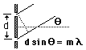

Diffraction Grating
A diffraction grating is the tool of choice for separating the colors in incident light.

|  |
The condition for maximum intensity is the same as that for a double slit. However, angular separation of the maxima is generally much greater because the slit spacing is so small for a diffraction grating. |
This calculation is designed to allow you to enter data and then click on the quantity you wish to calculate in the active formula above. The data will not be forced to be consistent until you click on a quantity to calculate. Default values will be entered for unspecified parameters, but all values may be changed.
Note: The small angle approximation was not used in the calculations above, but it may be sufficiently accurate for laboratory calculations.
| Discussion | Illustration |
Grating concepts
| HyperPhysics***** Light and Vision | R Nave |